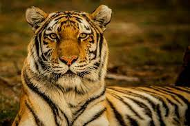
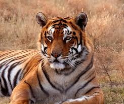

King of the Jungle
The tiger (Panthera tigris) is the largest living cat
species and a member of the genus Panthera. It is most
recognizable for its dark vertical stripes on orange-brown
fur with a lighter underside. It is an apex predator,
primarily preying on ungulates such as deer and wild boar.
It is territorial and generally a solitary but social
predator, requiring large contiguous areas of habitat, which
support its requirements for prey and rearing of its
offspring. Tiger cubs stay with their mother for about two
years, before they become independent and leave their mother's
home range to establish their own.
A public place. The powerful predator generally hunts
alone, able to bring down prey such as deer and antelope.
Tigers wait until dark to hunt. The tiger sprints to an
unsuspecting animal, usually pulling it off its feet with
its teeth and claws. If the prey animal is large, the tiger
bites its throat to kill it; smaller prey is usually killed
when the tiger breaks its neck. Tigers have been known to
eat up to 60 pounds of meat in one night, but more often
they consume about 12 pounds during a meal. It may take days
for a tiger to finish eating its kill. The cat eats until it's
full, and then covers the carcass with leaves and dirt. The
tiger comes back to feed some more.
The tiger is among the most recognizable and popular of
the world's charismatic megafauna. It featured
prominently in the ancient mythology and folklore of
cultures throughout its historic range and continues to
be depicted in modern films and literature, appearing on
many flags, coats of arms, and as mascots for sporting
teams. The tiger is the national animal of India,
Bangladesh, Malaysia, and South Korea.
